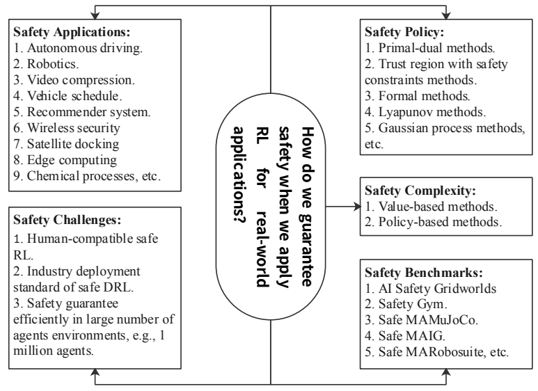
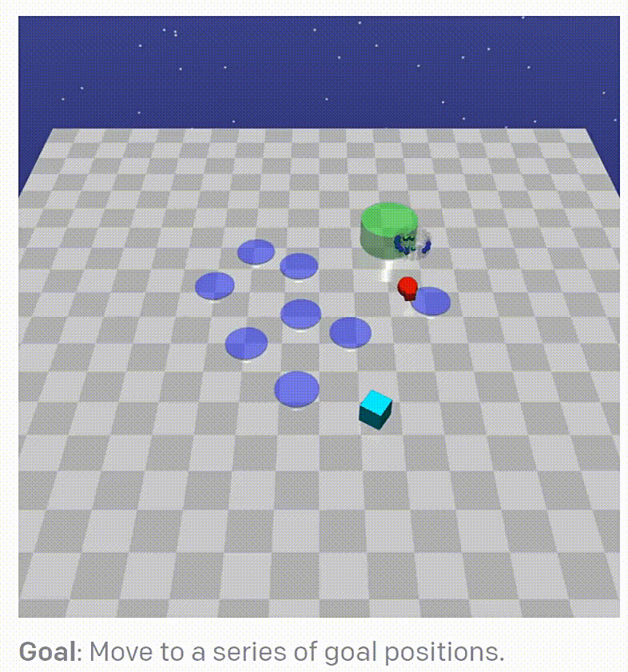
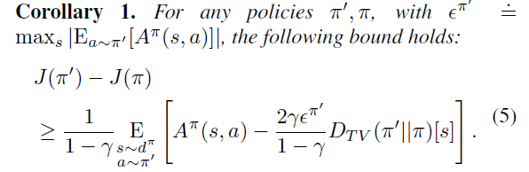

Safe Reinforcement Learning¶
Problem Definition and Research Motivation¶
Safe Reinforcement Learning is a subdivided development direction of reinforcement learning. The goal of reinforcement learning is to learn a policy that maximizes expected returns, but in real-world decision-making problems, such as autonomous driving and robotics scenarios, deploying such agents that only maximize expected returns often raises safety concerns.
The following security issues usually arise during reinforcement learning training [[1]]:
Negative Side Effects
Reward Hacking
Scalable Oversight
Safe Exploration
Robustness to Distributional Shift
Due to the existence of these problems, it is very necessary to consider security conditions during actual deployment. There are five key issues when defining safe reinforcement learning [[2]]:
Safety Policy. How to optimize strategies and find safe strategies?
Safety Complexit. How much training data is needed to find a safe policy?
Safety Applications. What are the latest developments in secure reinforcement learning applications?
Safety Benchmarks. What benchmarks can we use to fairly and comprehensively examine secure reinforcement learning performance?
Safety Challenges. What challenges will future safety reinforcement learning research face?
A framework outlining these five secure reinforcement learning problems from a unified perspective is shown below [[2]].
{kind=link}
Safe reinforcement learning is often modeled as Constrained Markov Decision Process(CMDP) . The constrained Markov decision process is an extension of the Markov decision process (MDP), consisting of seven tuples \((S, A, P, r, c, b, \mu)\), which means state space, action space, state transition function, reward, cost, cost threshold, and discount factor. After the agent takes an action, it will not only receive the reward r but also the cost c. The policy goal is to maximize the long-term reward under the constraint that the cost threshold b is not exceeded:
\(\max_{\pi}\mathbb{E}_{\tau\sim\pi}\big[R(\tau)\big],\quad s.t.\quad\mathbb{E}_{\tau\sim\pi}\big[C(\tau)\big]\leq\kappa.\)
{kind=link}
The picture above is the safety-gym environment released by OpenAI. The optimal strategy trained by traditional reinforcement learning is often task-centered, without considering the impact on the environment and itself, whether it meets human expectations, etc. The car(red) will move to the target location(green cylinder) at the fastest speed, without avoiding the trap area(blue circle) on the ground. If there are obstacles(cyan cubes) on the moving path, it will be knocked away or forced away.
Direction¶
The theoretical basis of safety reinforcement learning is mainly knowledge related to the dual method and convex optimization. The main theoretical methods can be divided into:
Primal Dual. Use the Lagrange multiplier method to convert to solving the dual problem.
Primal. Use other methods to solve the original problem.
The training scheme can be divided into:
Model-free.
Model-based.
For a detailed classification of algorithms in the current field of security reinforcement learning, please see the figure below(Quote from omnisafe ):

Primal Dual¶
In the original problem of safe RL, neither the objective nor the constraints are convex, but it can be converted into a dual problem using the Lagrange multiplier method. The dual problem is a minimization convex problem and can be solved. This solution has many classic jobs [[3-7]]。
Lagrangian function: \(\mathcal{L}(\pi,\lambda)=V(\pi)+\Sigma\lambda_i(U_i(\pi)-c_i),\lambda\geq0\)
Lagrangian dual function: \(d(\lambda)=\max_{\pi\in\mathcal{P}(\mathcal{S})}\mathcal{L}(\pi,\lambda)\)
Minimize the dual function: \(D^*=\min_{\lambda\in\mathbb{R}_+}d(\lambda)\) will obtain the optimal solution to the dual problem.
Primal¶
Although using the dualization scheme ensures the solvability of the problem, the speed of training iterations is very slow. While optimizing the policy function, the dual function must also be optimized. At the same time, it is not easy to select the Lagrange multiplier. Therefore, some methods do not directly focus on solving the entire original problem, but use the single-step update formula in Natural Policy Gradiants:
{kind=link}
Solve a relatively simple single-step constrained optimization problem at each update step to ensure that each update does not violate the constraints and improves performance. Naturally, a solution that meets the constraints will eventually be obtained. The representative method is PCPO etc.
model-free¶
Constrained Policy Optimization(CPO) [[3]] is the first policy gradient method to solve the CMDP problem. By optimizing the following two equations, you can ensure that the return increases monotonically while satisfying the security constraints.
\(J\left(\pi'\right)-J(\pi)\geq\frac{1}{1-\gamma}\underset{\stackrel{s\sim d\pi}{a\sim\pi'}}{\operatorname*{E}}\left[A^{\pi}(s,a)-\frac{2\gamma\epsilon^{\pi'}}{1-\gamma}D_{TV}\left(\pi'\|\pi\right)[s]\right]\)
\(J_{C_{i}}\left(\pi^{\prime}\right)-J_{C_{i}}\left(\pi\right)\leq\frac{1}{1-\gamma}\underset{\overset{s\sim d^{\pi}}{a\sim\pi^{\prime}}}{\operatorname*{E}}\left[A_{C_{i}}^{\pi}\left(s,a\right)+\frac{2\gamma\epsilon_{C_{i}}^{\pi^{\prime}}}{1-\gamma}D_{TV}\left(\pi^{\prime}\|\pi\right)\left[s\right]\right]\)
This approach converges almost to safety bounds and yields better performance than the primal-dual approach on some tasks. However, CPO is computationally more expensive than the Lagrange multiplier method because it requires computing the Fisher information matrix and using a quadratic Taylor expansion to optimize the objective.
Model-based¶
Model-based deep reinforcement learning(DRL) methods generally have better learning efficiency than model-free DRL methods, and this is also true in the field of secure reinforcement learning. But in real-life situations, building accurate environment models is challenging, and many simulation environments have difficulty building models to assist the deployment of deep reinforcement learning methods.
Future Study¶
When we leverage reinforcement learning in real-world applications, there are many challenges encountered during deployment. Security reinforcement learning is a direction that has not been developed for a long time, and there are many aspects that need to be explored [[8, 9, 10]_]. For example:
Using game theory to implement safe multi-agent reinforcement learning. Different games can be considered in different game settings for real-world applications.
Secure reinforcement learning based on information theory. Information theory may help handle uncertain reward signals and cost estimates and effectively solve problems in large-scale multi-agent environments.
Utilize human brain theory and biological theory. Take some inspiration from the laws of biology to design safe reinforcement learning algorithms.
Human-computer interaction. Learn from interactions with non-expert users, modeling human behavior and realistic interactions, allowing robots to safely inherit human preferences and learn more about potential solutions from humans.